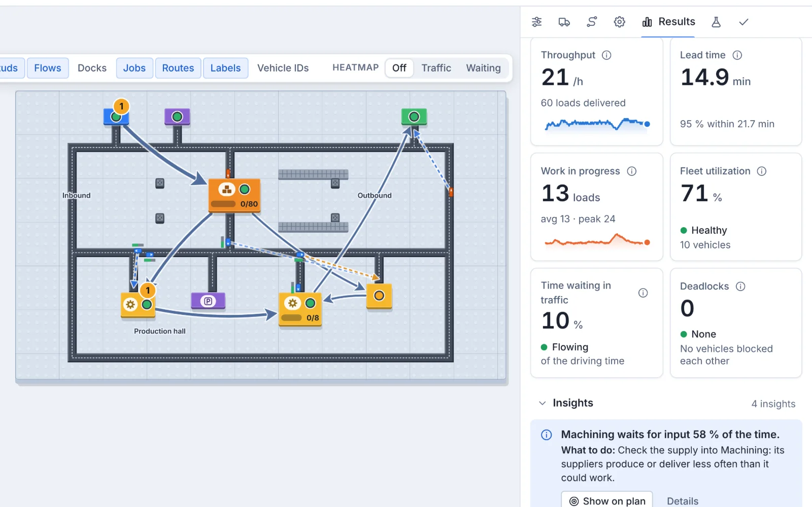

A dashboard that names the bottleneck
Throughput, lead time, work in progress, utilisation and time stuck in traffic, per station and per fleet, with findings in plain sentences that point at the limiting station and say what waits in front of it.